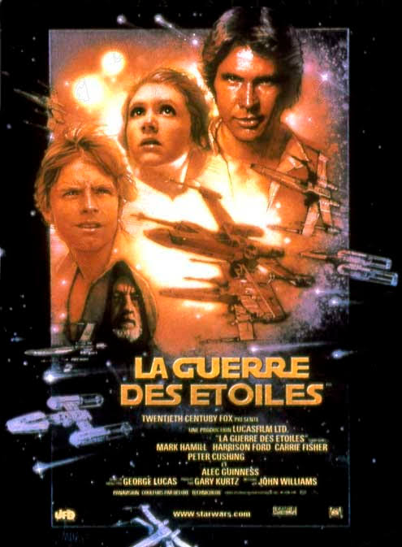

Star Wars IV : un nouvel espoir
Il y a bien longtemps, dans une galaxie très lointaine... La guerre civile fait rage entre l'Empire galactique et l'Alliance rebelle. Capturée par les troupes de choc de l'Empereur menées par le sombre et impitoyable Dark Vador, la princesse Leia Organa dissimule les plans de l'Etoile Noire, une station spatiale invulnérable, à son droïde R2-D2 avec pour mission de les remettre au Jedi Obi-Wan Kenobi. Accompagné de son fidèle compagnon, le droïde de protocole C-3PO, R2-D2 s'échoue sur la planète Tatooine et termine sa quête chez le jeune Luke Skywalker. Rêvant de devenir pilote mais confiné aux travaux de la ferme, ce dernier se lance à la recherche de ce mystérieux Obi-Wan Kenobi, devenu ermite au coeur des montagnes désertiques de Tatooine...